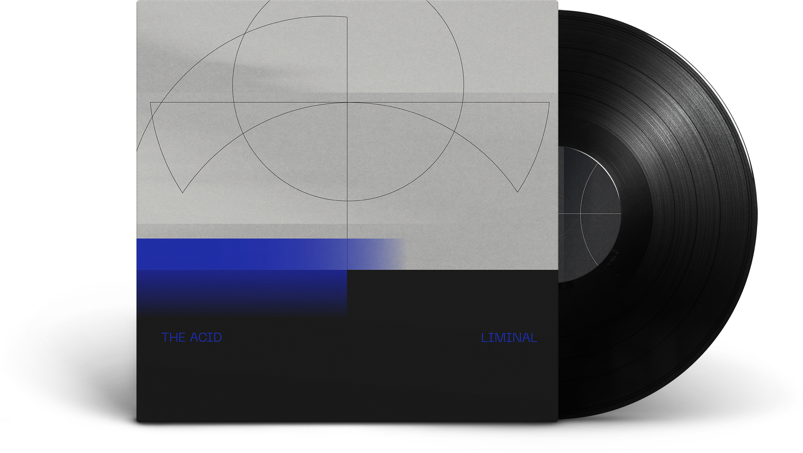
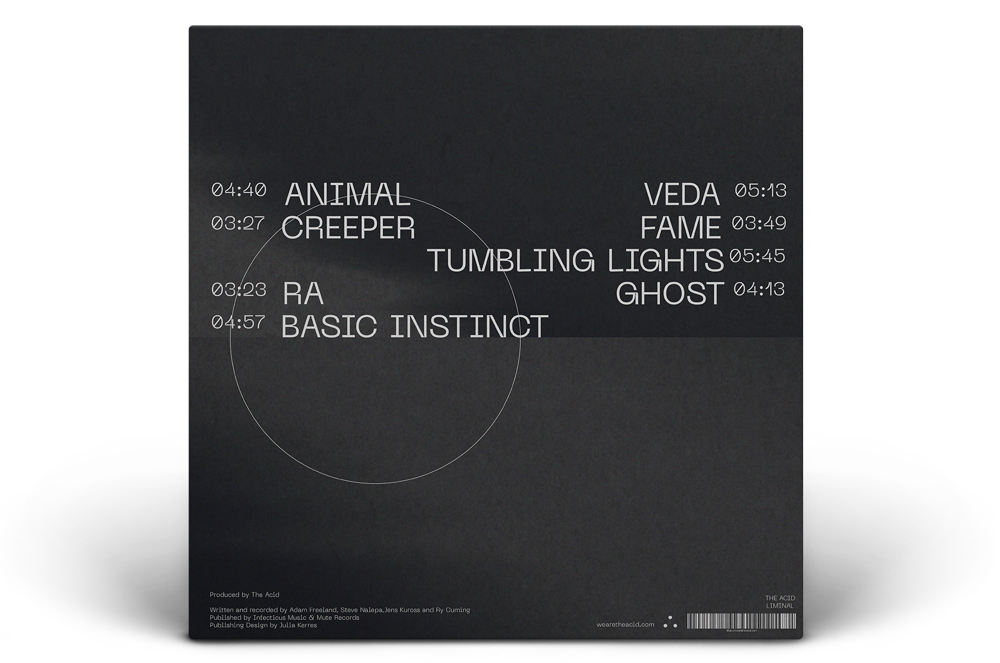
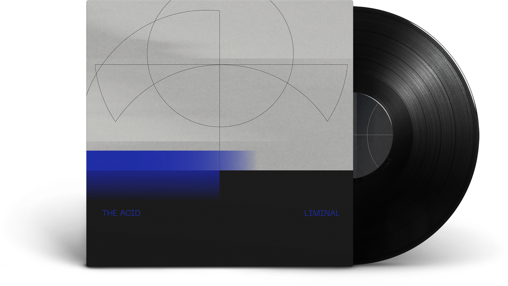
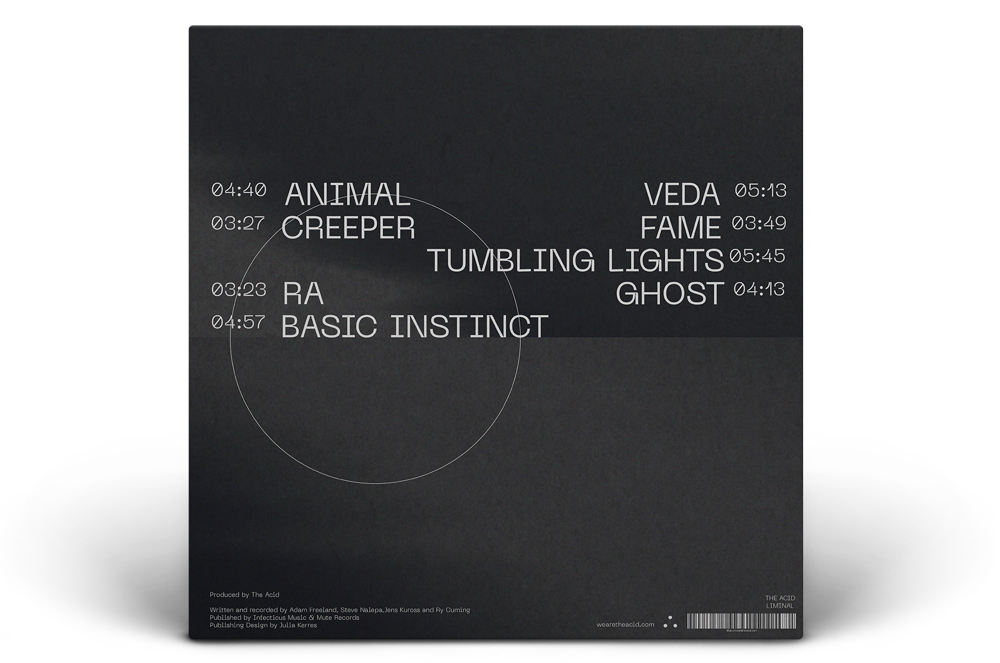

Liminal
2020
Vinylcover
Self-initiated
The redesign of the vinyl cover of The Acid refers to the minimal-ist melody of the electro-acoustic instruments in interaction with the melodic vocals. This tension is made clear in the design through the reduction in colour and basic shapes, contrasting the bright blue stroke and the striking typeface Neue Machina by Pangram Pangram® Foundry.
 


